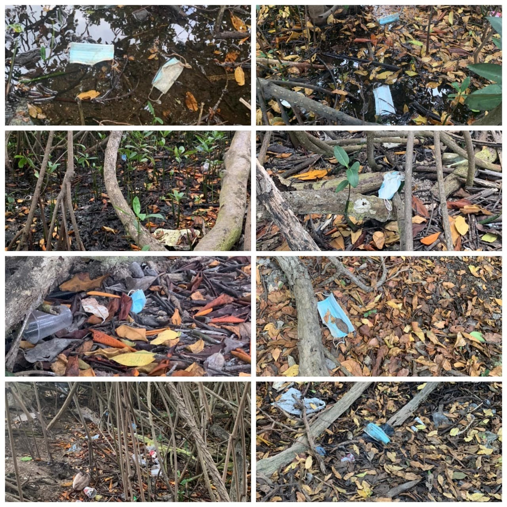
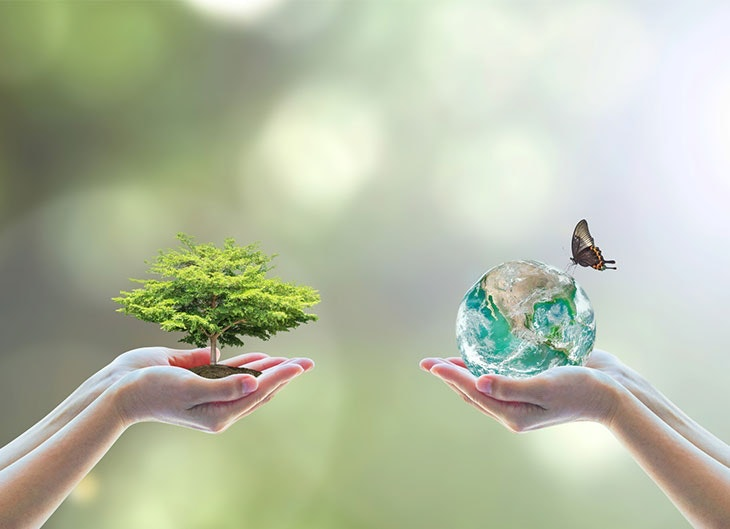
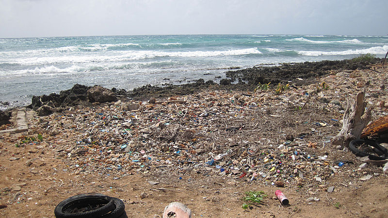

Los efectos negativos de la pandemia del covid -19 ya se están empezando a reflejar en cuanto a la contaminación global de las fuentes hídricas por la mala disposición de los residuos hospitalarios ya que los tapabocas desechables están hechos con un polímero llamado polipropileno (termoplástico) el cual toma muchos años en desintegrarse. Esta contaminación se puede observar por ejemplo en lagos como el lago Tuna ubicado en Etiopía en donde se encontraron todo tipo de mascarillas quirúrgicas o en los mares como en el Mediterráneo ,específicamente en la ciudad de Antibes, Francia.
“Tarde o temprano tenemos que reconocer que la tierra también tiene derecho de vivir sin contaminación” Evo Morales

En las playas de la isla de San Andrés, un paraíso de Colombia en el Caribe, las olas devuelven botellas de plástico, chancletas, cubiertos y vasos de un solo uso que cubren la arena como evidencia de que algo está mal. [4]

Cada año se acumulan 25.000 toneladas de residuos en esta isla, la principal del archipiélago de San Andrés, Providencia y Santa Catalina, en cuyas aguas circundantes está la Reserva de la Biosfera Seaflower, que desde el año 2000 hace parte de la red mundial de sistemas protegidos por la Unesco.